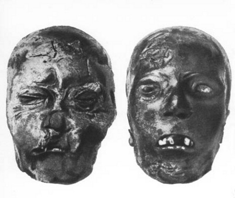
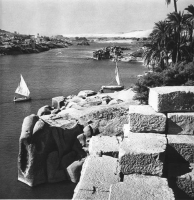

Herodotos’a tarihin babası derler. Coğrafyanın babası da denseydi yanlış olmazdı. O, İ.Ö. V. yüzyılın ortasındaki çağdaşlarına tam olarak barbar dünyasını –“barbar” düpedüz yabancı anlamında, Yunanlıların kırlangıç “barbar konuşur” dedikleri anlamda alınmak üzere– tanıtmıştır. O, bilinen, bilinmeyen ve bazen düşsel tüm eski kıtayı, dediğine göre, dünya “tek” olduğu için, insanların üç olarak saymasının nedenini anlamadığı üç eski kıtayı okurlarına tanıtmıştır. Şöyle yazar: “Dünya bir tane iken, insanların ona üç farklı isim vermiş olmalarının nedenini doğrusu anlayamıyorum.” Bu üç isim Avrupa, Asya ve Afrika yerine kullandığı Libya’dır. Açıklama doğal olarak 1492’den öncedir.
Dünya bir tanedir, hem tek hem de başka başkadır, aynı temel gereksinimlerle yönetilen, ama bunları sonsuz çeşitlilikle farklı adetlere göre karşılayan ırklarla ve uluslarla doludur. Herodotos’un asıl tasarısı ilkin Med savaşlarının büyük kahramanlıklarını anlatmaktı. Bu savaşlar aşağı yukarı onun doğduğu sırada (Herodotos İ.Ö. 480’e doğru doğar) yer alır ve hemen tam olarak V. yüzyılın ikinci yarısını kaplarlar. Med savaşları genç Yunanistan için tam bir yıkım oldu: Yalnız Medler ve Persler değil, o dönemde Pers krallarına boyun eğmiş halklar, Batı Hindistan’dan Ege denizine kadar tüm Ön Asya halkları kitleler halinde, Perslere bağlı Mısır’ı da unutmamak gerek, bu krallar –Yunanlılar ona Büyük Kral derlerdi– hepsi Yunanlıların üstüne saldırdılar. Yunanlılar bu yıkımı aştılar. Dalgalara karşı savaşır gibi saldırganla dövüştüler. Çoğu zaman ona karşı birlik içinde dövüşerek, Herodotos’a göre, dünyanın bütün halkları arasında Yunanlıların ayırt edici özelliği olan, onları Asya ve Mısır hükümdarlarının uyrukları değil, özgür yurttaşlar yapan o şiddetli bağımsızlık aşkını böylece kurtardılar. Herodotos Yunanlıları “barbar” dünyadan bu özellikle ayırt ederken yanılmaz. Yunanlılar özgür kalmak istediler, bu nedenle de yalnız ürküntü veren sayıca azlıktan değil, siteleri birbirlerinin, her site içerisinde soyluları demokratların karşısına diken süreğen iç bölünmelerden de doğan zor koşullar içinde zaferi kazandılar. Bu zaferi onlara sağlayan gerçekten de kökünden sökülmez özgürlük aşklarıdır. Herodotos bunu bilir ve bütün açıklığıyla belirtir: O halkını bu nedenle sever.
Herodotos Yunanlı halkını sever ama çok daha güçlü ve kimileri Yunanlılardan çok daha önce uygarlaşmış başka halkları tanımaya ve onları tüm Yunanlılara tanıtmaya da meraklıdır. Öte yandan dış dünyanın adetlerinin değişkenliğine ve tuhaflığına da meraklıdır. Bu nedenle yazdığı Med savaşları tarihini, Yunanistan’a saldıran ve Yunanlıların o dönemde henüz pek tanımadıkları uluslar hakkında geniş bir araştırma ile daha ileri götürür. Bu onu yavaş yavaş araştırmasını daha genişletmeye ve okurlarını zamanında bilinen tüm dünya hakkında bilgilendirmeye iter.
Yapıtının adı açıkça Araştırmalar’dır; Yunancada Historiai (İstorie) o dönemde araştırmalardan başka anlamı olmayan bir sözcüktür. Herodotos’tan önce tarih –tarihsel araştırma– yoktur. Herodotos hem tarih hem de coğrafya yapıtına Araştırmalar adını verirken, bu iki bilimi bilimsel araştırma üstünde kurar. Şu da bir gerçek ki Herodotos’un mizacı onu, en başta ve yapıtı boyunca, tarihsel gerçekliği araştırmaya sürüklemeden önce, coğrafya ya da halkların kökenleri (etnografi) araştırmasına iter.
Peki Herodotos neye meraklıdır? Genel olarak ve yanılmaktan korkmadan şöyle cevap verebiliriz: Her şeye. İnançlar, adetler, anıtlar, “büyük yapıtlar” adını verdiğimiz şeyler, toprağın cinsi, iklim, fauna (o çevrede yaşayan hayvanlar) ve flora (o çevrenin bitki örtüsü) (özellikle fauna), çöllerin genişliği, keşif yolculukları, dünyanın sınırları, kaynakları bilinmeyen büyük ırmaklar –ve her yerde hem de özellikle insanın etkinliği, yaşam koşulları, beden yapısı, zevkleri, tanrıları, çok eski geçmişi ya da tersine yaşam türünün ilkel niteliği. İnsan ve yapıtı, insan ve macerası, doğal ortamında bulunan, adetlerinin tuhaflığıyla incelenen insan: İşte Herodotos’un Araştırmalar’ının ilgi odağı bunlardır. Bütün ülkelerin, bütün halkların insanını betimlemeye bağlılığı bakımından Herodotos antik hümanizmanın en ilgi çekici simalarından birisidir.
Merak sözcüğünü kullandım. Bu sözcük yine de yazarımızı anlatmak için yetersizdir. İlerde açıklamak üzere bu konuya döneceğim. Ama bu arada tarihsel gerçeklik deyimini kullandığım için önce, bana öyle geliyor ki Herodotos’a çok kolayca uygulanan bir sözcük konusunda meramımı açıklamak istiyorum: Dediklerine göre, Herodotos saf bir kişidir. Onun vicdanlı araştırmacı iyi niyeti ile henüz bir çocuk saflığı taşıdığı doğrudur. Safyürekliliği ilkin merakı kadar sonsuz görünür ve biri olmadan öbüründen pek söz edilmez. En modern bilimin yeniden ele alıp denetlediği tüm konularda, en azından onun kendi gözleriyle görmüş olduğu şeylerde çok az yanıldığını söylemek gerekir. Buna karşılık, kendisine anlatılan birçok öyküyü ayırt etmeden, çoğu zaman eleştiri süzgecinden geçirmeden aktarır. Ziyaret ettiği birçok ülkede kendisine “kılavuzluk” eden genellikle cahil rahiplere kanar. Hatta genellikle ilk önüne çıkana kanar –sonuç olarak o şaşırtıcı şeyi çok fazla sever. Bir öykü ne kadar şaşırtıcı ise onu o kadar büyüler– ve onu ne kadar inanılmaz bulursa bulsun anlatmakta elini çabuk tutar. Aslında onu anlatmazsa, araştırmacılık işini eksik bıraktığına inanır. Enayi olmadığını iş işten geçtikten sonra duyurmak pahasına bile olsa böyle yapar. Mısır’dan kral ile iki hırsızın parlak öyküsünün sonucunda koyduğu ihtiyat kaydına bakınız: “Eğer bu sözler bir kimseye inanılır görünüyorsa varsın inansın; benimse bütün bu yapıtta (demek ki ihtiyat kaydı yapıtının tümü için geçerlidir) söylendiğini duyduğum şeyleri yazmaktan başka bir amacım yoktur.”
Bu durumda Herodotos tarihini, biraz garip bir tarzda bilimsel dürüstlük ve safyüreklik karşımı oluşturur. Herodotos dürüstçe doğruyu arar ve dünyanın öbür ucu peşinde koşmak için kendini büyük sıkıntılara sokar. Ama aynı zamanda harikalar dünyası adına henüz ortaya yeni çıkmış bazı genç halkların zevklerini elde tutar. Tuhaf bir biçimde, aradığı gerçekliğin, denebilirse, şaşırtıcı bir niteliğinin olmasını isterdi; araştırmalarının ona bol bol olağanüstü şeyler kazandırmasını isterdi. Tarihin babasına göre, tarihsel olanın son sınırı, sonuç olarak, inanılır tanıklarca doğrulanacak biçimde harika olmasında yatar. O, tarihin bir tür peri masalı olmasını diler gibidir, ama insanın onun gerçekten olmuş olacağının kanıtına sahip olması gerekmektedir.
Çok açıktır ki, Herodotos’un iki isteğinden –güzel öyküler ve garip halklar arayışı ile öte yanda gerçeklik arayışı– biri öbürüne zarar verir. Araştırmalar adlı kitabında, bu kadar safyürek bir meraklıyı rahatça kötüye kullanacak birtakım bilgi kaynaklarından edindiği bunca tuhaf (öte yandan eğlenceli) öykülerde olduğu gibi.
Yazarımızda yalnız bir tür yanlışa hiç rastlanmaz: Bile bile yapılan yanlıştır bu. Herodotos hiçbir zaman yalan söylemez. Yanılır, ters anlar, aldığı notlarda şaşırır, özellikle, insanlar eğlensin diye şaşırtıcı bir kolaylıkla kendini aldanmaya bırakır. Ama onu sert, üstelik güven duymayan bir eleştiriye tabi tutan tüm derin çalışmalara karşın, Herodotos asla yalan konusunda suçüstü yakalanmamıştır. O çok namuslu, çok da hayalci, ama tamamıyla doğru sözlü bir insandır.
Övgüye değer bir erdemdir bu. Çünkü gidip geldiği ülkeler hakkında hemen hemen hiçbir şey bilmeyen okurlarına, isteseydi, eline ne geçerse, hangi konuda olursa olsun anlatırdı kolayca: “Davulun sesi uzaktan hoş gelir!” derler. Herodotos bunca gezginin düştüğü bu eğilime kapılmamıştır.
Herodotos çok yolculuk yaptı. Bize sağladığı tanıklıkları çok uzaklarda aramaya gitti. Dünyayı gözleri ve ayaklarıyla, kuşkusuz sık sık eşek ya da at sırtında, sık sık da gemilerde fethetti. Tamamıyla Nil’in taştığı dönemlerde yapılan Mısır yolculuğunun güzergâhı ortaya konabildi. Nil vadisinde, ilk çağlayana yakın, eski Mısır’ın uç sınırı olan Elephantine’ye (Elefantina-Assuan) kadar uzandı. Bu bin kilometrelik bir yol demektir. Doğu yönünde hiç değilse Babil’e kadar gitti, bu da Ege denizinden başlayarak yaklaşık iki bin kilometre eder, hatta belki Elam Krallığında yer alan Sus’a kadar daha da uzak bir yol izlediği söylenir, ama bu kesin değildir. Kuzeyde, bugünkü Ukrayna’nın yanı başında, Karadeniz kıyısında kurulan Yunan kolonilerini dolaştı. Ukrayna steplerinde akan büyük nehirlerden birinin, Dinyeper ya da Borysthenes’in (Voristenis) aşağı havzasını Kiev bölgesine dek izlemiş olması olasıdır. En sonu, batıda, Güney İtalya’da bir Yunan kolonisinin kurulmasına katıldı. Kyrenaika’yı (Kırinaika) ve herhalde bugünkü Trablus’u da dolaştı.
Demek ki bu tam bir kişisel araştırma, coğrafyacımızın el attığı yerler hakkında bir araştırmadır. Anlatısının içerisinde onun durmadan sorular sorduğu, yeni şeylere baktığı duyulur. Mısır’da bir tahnitçi dükkânına girer ve mesleğin yöntemleri hakkında ve de bu işlerin fiyatı hakkında ayrıntılı bilgiler edinir. Tapınaklarda yazıtları kendi diline çevirtir, rahipleri firavunların tarihi konusunda sorguya çeker. Ülkenin dinsel bayramlarında bulunur, giysilerin rengini ve başlıkların biçimini gözleriyle içer adeta. Piramitler boyunca, ihtiyatlı olarak tabanı ölçer ve böylece aldığı ölçülerde pek yanılmaz. Ama yüksekliği göz kararı ölçmesi gerektiğinde fazlasıyla yanılır. Gittiği bütün ülkelerde durum böyledir, gitmediği pek çok ülkede ise şu ya da bu handa rastlayabildiği Yunan ya da barbar gezginlerinin anlattıklarına bel bağlar...
Ama genel düşünceler için artık yeter diyelim. Herodotos benim hoşlandığımdan daha fazla somuttur. En iyisi dikkat edilmesi gereken ilgi odaklarını belirtmeye çalışalım. Bu doğal olarak Mısır olabilir; bu konuda bitip tükenmek bilmez. Ama Mısır’la ilgili öyküleri çok bilinen şeylerdir; ben okurumu daha ileri götürmeyi yeğlerim. Bu durumda, Mısır’ı tamamıyla bir yana bırakmadan (bitirirken bu ülkeye kısaca döneceğim), yazarımızda, bana onun tarzında, uzaklarda biraz başı boş dolaşmayı yasaklamayacak, üç ilgi merkezini ayırt edeceğim, bu üç ülke ilkçağın belli başlı tarım toprakları olmuşlardır. Bu ortak özellik, Herodotos’un gözünden kaçabilmiş olsa bile, coğrafya biliminin hangi insan gereksinimlerinden doğduğunu açıkça gösterir. Bu bilim açlıktan doğdu; açlık, antik dünyanın dayanılmaz açlığı, o zamanki halkların en çalışkan ve en yoksullarından biri olan Yunan halkını nankör, özellikle de iyi işlenmemiş ve iyi bölüşülmemiş toprağından dışarı atmaktaydı.
Bu üç tahıl toprağı Skythia(Skitia -İskit ülkesi) (Ukrayna), Mezopotamya ve Kuzey Afrika’dır. Bu üç örnek yardımıyla ve doğruluk payı ile yanlışlık payını (ve yanlışın kökenini) Herodotos’un açıklamalarında saptayarak Herodotos’un kendi dehasını belirtmeye çalışacağım. Çünkü coğrafya Yunan halkının gereksinimlerinden doğmuş olduğu kadar aynı zamanda, bana öyle geliyor ki, yeni bir yazın türünün ya da yeni bir bilimin ortaya çıkışında çoğu zaman olduğu gibi, tam zamanında çıkagelmiş bir dehadan doğmuştur. Bunu söylerken, dâhinin bu doğuşunun açıklanamaz ya da “mucizevi” olmasını değil, sadece buna olanak sağlayan koşullar hazır olsalar bile, bu doğumun hiç de zorunlu olmadığını kastediyorum: Olmayabilirdi de bu, çoğu zaman da olmaz. Bilim de, yazın da bundan çok çekmiştir.
Neyse dünya turuma geliyorum ben ve Babylon’dan (Vavilon) başlıyorum. Herodotos büyük Babylon sitesini gördü. Sur kare biçimindedir, der. Karenin kenarlarından birinin boyunu belirtir ve bu rakam çevre söz konusu olduğunda seksen beş kilometredir. Çok abartılı bir rakamdır bu. Babylon’un çevresi olsa olsa yirmi kilometreye ulaşıyordu. Herodotos’da büyük rakamlara karşı bir çocuk ya da güneyli eğilimi vardır. Öte yandan o bu surun Dareios (Garios) tarafından yerle bir edildiğini belirtir. Ama duvarın yıkıntıları kalmıştır. Duvarın nasıl yapıldığını öğrenmek ister. Ona duvarın tuğladan yapıldığını ve her otuz tuğla katının bağlantı için birbirine geçmiş sazlar ve ziftle harçlandığını anlatırlar. Zift içine yerleştirilmiş bu sazların izi duvarın bugünkü yıkıntıları içinde hâlâ görünür haldedir.
Herodotos Babil’i büyük bir kent olarak betimler. O dönemde görmüş olduğu, antik dünyanın en büyük ve en geniş kentiymiş Babylon. Birbirini dik açıyla kesen büyük düz sokakları gösterir bize. Kendi ülkesinde bilinmeyen üç ya da dört katlı evleri hayranlıkla seyreder. Nabukadnezar tarafından yaptırılan birbirine koşut iki surun olduğunu öğrenir. Bu çifte surun toplam kalınlığı aşağı yukarı otuz metreydi. Herodotos bir defalık, gerçekliğin altında, aşağı yukarı yirmi beş metre, der. Siteye yüz kapı ayırır: Yanılmaktadır, kentlerin destanlarda yüz kapısı vardır. Kendisinin de belirttiği gibi, zaten onları kısmen yıkılmış bir surda sayamamıştır.
Herodotos Baal ya da Bel tapınağında, onun üst üste sekiz katı ve döne döne çıkan merdiveni ile yükselen yüce kulesini de oldukça doğru olarak betimler. Biz Babil kulesinde yeniden can bulan bu Bel kulesini, kazılardan ve Babil ile ilgili belgelerden biliriz. Son kattaki oda hakkında, Herodotos şu düşünceyi yansıtır: “Rahipler tanrının bu tapınağa kişi olarak geldiğini söylerler. Ama bu bana inandırıcı görünmüyor.”
Herodotos daha sonra Babil’de hüküm sürmüş krallar ve kraliçelerden bazılarını saymaya çalışır. Bir yazıtın doğruladığı gibi, İ.Ö. IX. yüzyıldan VIII. yüzyıla yaşamış olan ve hiçbir şekilde Ninos’un dillere destan karısı, asma bahçelerin Semiramis’i, tragedya ve operaların kahraman kadını olmayan Babylon prensesi Semiramis’ten söz eder. Nitokris adında ve artan Med tehdidine karşı kenti korumak için Fırat üstünde, Babil’in yukarısında tahkimat yapmış bir başka kraliçeden de söz eder. Bu kraliçe Nitokris kralımız Nabukadnezar’dan başkası değildir. Bir Yunanlının kulağına geldiğine göre dişil bir sonek alan bu kral adının Pers dilindeki biçimi Herodotos’u yanıltmıştır. Bununla birlikte, bu Nitokris-Nabukadnezar’ın Medlere karşı Babil’in kuzeyinde çeşitli savunma yapıları yaptırdığı doğrudur; yazarımızın betimlediği ve ülkelerin sulanmasına olduğu kadar başkentin savunmasına da yarayan Sippara havzası bunlar arasındadır.
Buna karşılık, çiviyazılı bir belgeye göre, Babil’in Kiros tarafından kuşatılması, herkesin bildiği bir öyküde Herodotos’un anlattığı gibi olmadığı anlaşılmaktadır. Pers ordularının yaklaşması üzerine kentte bir ayaklanma patlak vermiş, Kiros da oraya muzafferane bir giriş yapabilmiştir. Ama Herodotos herhalde yerinde, Babil’in düşüşünün büyük sitenin gururuna daha uygun bir değişkesini derlemiştir.
Tarihçimiz galipler ve Babil’in yeni hakimleri olan Persler hakkında da bilgi edinmeye girişmiştir. Kuşkusuz, o hiçbir zaman asıl Persia’ya, yani Persepolis bölgesine ve İran dağlarına gitmemiştir. Bunu yaptığı iddiasında da değildir. Ama imparatorluğun yollarında ve Babil’in (ya da oraya dek gitmişse Sus’un) hanlarında birçok Pers ile karşılaşmak ve konuşmaktan geri kalmamıştır ve bunlardan birilerinin söylediklerini öbürleriyle denetlemek istemiş gibi görünmektedir. Herodotos’un Perslerin eğitimleri ve dinleri hakkında verdiği bilgiler, birkaç ayrıntı dışında, modern tarihçiler tarafından doğru bulunur. Perslerin adetleri hakkında bize verdiği tablo ne kadar kısa olursa olsun, Herodotos Pers uygarlığının manevi ortamını –hayran kalarak tabii– şöyle bir görmüş gibidir.
Eğitim konusunda, Herodotos’un şu sözü ünlüdür ve çok doğrudur: “Persler çocuklarının eğitimine beş yaşından itibaren başlarlar ve bu yaştan yirmi yaşına kadar onlara yalnız şu üç şeyi öğretirler: Ata binmek, yay germek ve doğruyu söylemek.” Gerçekten de, Perslerin dini doğruluk sevgisini öğretmekteydi. Odysseus’un “kusursuz yalanlar”ına hayran bir Yunanlıyı hiçbir şey daha fazla şaşırtamazdı. Herodotos Hürmüz ve Ehrimen’in dini hakkında da bilgi edinir. Perslerin rahiplerine göre köpek ve adını unuttuğu başkaları gibi, hepsi de Hürmüz tarafından yaratılan yararlı hayvanları öldürmenin günah, oysa Ehriman’ın yaratıkları olan karınca ve yılanları öldürmenin mübah olduğunu bilir.
Bu çeşitli örneklere bakılıp, bir de Medlerle Perslerin Yunanistan’a yenilerdeki saldırısı hatırlanırsa Herodotos’u tanımlamak için başta kullandığım “merak” teriminin yetersiz olmaya başladığı görülür. Bu merak, ister eski Babil kenti, ister Yunanistan’ınkinden o kadar uzak olan Pers uygarlığının manevi ortamı konusunda olsun, şaşkınlık, hatta hayranlık haline gelir. Herodotos Mısır ve harikaları konusunda uzun araştırmasında yine aynı sesi duyurur.
Öbür halklara geçmeden önce Herodotos’un dünyayı kafasında nasıl canlandırdığını belirtmek isterim. O, Miletoslu Hekataios gibi, dünyaya “tamamen yuvarlak, çevresi Okyanus akarsuyu ile sarılmış” düz bir disk biçimi veren “Dünya çevresinde yolculuklar”ın yazarlarını ister istemez gülünç düşürür. Bununla birlikte, Herodotos bu metinde ve başka yerde yalnızca Okyanus adında bir ırmağın varlığına ve dünyanın biçimi olacak tam bir daire düzgünlüğüne karşı çıkar. Ama o da dünyayı bir küre gibi değil bir disk gibi görür. Üstünde durduğu görünüş, tam olarak daire değilse de, çemberin simetrik düzenine yatkın gibidir.
Hindistan’a kadar uzanan ve insanların yaşadığı ve birkaç çölle uzayıp giden Asya Çinhindi ve Çin’den haberi yoktu; Afrika güney bölümünden kopuktur. İ.Ö. VI. yüzyılda, Fenike’lilerin keşif gezileri ile 509 yılında Skylaks’ın (Skilaks) yaptığı gezi onun Güney Asya ile Güney Afrika’nın sularla kuşatılmış olduğunda karar kılmasına yol açarlar. Güneydeki bu iki kıtanın kuzeyinde tam Sibirya’nın ortalarına kadar, “dünyanın öbür iki bölümüyle aynı alan üzerinde uzunlamasına yayılan” Avrupa uzanır. Ama Herodotos bu Avrupa’nın kuzeyde, kuzeybatıda ve doğuda suyla çevrili olup olmadığına karar veremez.
Sözünü ettiğim keşif gezilerinden birincisi ile ilgili parça şöyledir. Bu keşif gezisine yollayan İ.Ö. VI. yüzılda firavun II. Neko’dur. (Herodotos onu Nekos diye adlandırır): “Eritne denizinde (Basra Körfezi) yolculuğa çıkmış olan Fenike’liler, diye yazar Herodotos, Hint denizinde seyrettiler. Sonbahar geldiğinde bulundukları Libya (Afrika) bölgesine yanaşıyorlar ve buğday ekiyorlardı. Sonra hasat zamanını bekliyorlardı; hasattan sonra da yeniden denize açılıyorlardı. İki yıl yolculuk ettikten sonra, üçüncü yıl Herakles sütunlarını (Cebelitarık) geçtiler ve Mısır’a vardılar. Döndüklerinde Libya çevresini dolaşırken güneşi sağ taraflarında görmüş olduklarını anlattılar. Bu bana hiç inanılır gibi görünmüyor; ama belki başka birine öyle gelebilir.” Herodotos, ilk kez kuşku göstermekte haksızdır. Gerçekten de Ümit Burnu’nu geçen bu denizciler, güneyde, güneşi kuzeyde, sağ yanlarında gördüler: Çünkü güney yarımkürede bulunmaktadırlar. Herodotos bunu anlayacak kadar kozmografya bilmez. Ama anlaşılamayan ve onun kabul etmeye yanaşmadığı bu durum bize Afrika keşif yolculuğunun doğruluğunu kanıtlar.
Daha sonra anlatısında, Güney Asya’nın, Afrika gibi, sularla çevrili olduğuna karar vermesini sağlayan Skylaks’ın keşif yolculuğu gelir: “Kastapyre’den (Kastamiri) (orta İndus’un bir kolu üstünde kurulmuş Pencap’ta bir kenttir) yolculuğa çıkmışlar, diye yazar Herodotos. Irmakta Doğu yönünde denize kadar inmişler. (Bu ırmak Indus ırmağıdır. Irmağın doğuya doğru akmadığını söylemeye gerek yoktur; Herodotos bu ırmağı ya Ganj ile karıştırmakta ya da düpedüz yanılmaktadır.) Buradan, diye devam eder Herodotos, batıya doğru seyrederek, sonunda, yola çıkışlarından sonra otuzuncu ayda, yukarıda sözünü ettiğim, vaktiyle Mısır kralının emriyle Libya’yı dolaşmak üzere yola çıkmış Fenike’lilerin aynı limanına varmışlar.”
Şimdi İskitler’e geliyorum. VIII. yüzyılın sonundan başlayarak, Karpatlardan Don (Herodotos Tanais der) kıvrımına kadar Ukrayna steplerinde yerleşen İskitler İ.Ö. V. yüzyılda Yunanlılarca hâlâ bilinmedik bir halk olarak kalmışlardı. Gezginimiz onların ülkelerinin ve adetlerinin tasvirine yapıtının önemli bir bölümünü ayırdı. Araştırmasını sürdürmek üzere, Herodotos Karadeniz kıyısındaki Yunan kentlerine gitti; İskit ülkesinin mahrecinde, Dnieper’in aşağı akışında kurulan şu ticaret bölgelerinin en önemlisi olan Olbia’da (Olvia) kaldı. Dediğim gibi, bir konvoyla bu nehirden yukarı çıkarak, Kiev’den uzak olmayan, büyük bir açıklıkla betimlediği İskit kralları mezarlarının bulundukları bölgeye varmış olması olanaksız değildir.
Herhalde İskitler konusundaki bilgisi çok güvenilir görünmektedir. Adetlerin tasvirine ancak nadiren destan özellikleri karışır. Ülkedeki höyük (kurgan) kazıları –öbürleri yanında Kerç yakınındaki Kuloba sitesinin keşfi– onun tanıklığını doğrulamışlardır. Büyük bir zevkle yazdığı garip törenlere ve inançlara gelince, bunlar yine yenilerde İskitlerle aynı uygarlık düzeyindeki birtakım topluluklarda elde edilmekteydi.
Herodotos’un öncelikle belirttiği şey saldırılara direniş konusunda İskitlerin büyük ustalığıdır. Bu ustalık saldırgan karşısında gerilemekten, istemedikleri zaman onunla karşı karşıya gelmemekten, onunla savaşacak durumda olacakları ana kadar onu böylece geniş ovaları içine çekmekten ibarettir. Onlar bu davranışta yalnız, otlarla kaplı geniş bir ova olan ülkelerinin doğasından değil, ovayı baştan başa geçen ve eşsiz direniş hatları oluşturan büyük nehirlerden de büyük ölçüde yardım görmüşlerdir. Herodotos Tuna’dan Don’a, bu nehirleri ve bunların kollarından bazılarını sayar. Bu sıralamalarda fazladan bir ad bile vardır.

Vaktiyle İskit halkından bir kolun yaşadığı Altay dağları bölgesinde bir
mezarda bulunmuş bir İskit kralı (solda) ile metresinin başları.
Çok bol bir malzeme içinden seçim yapmak gerektiğine göre, şimdi onun İskitler’de kâhinlik konusunda bize verdiği bazı ayrıntıları görelim: “İskit kralı hastalanınca sanatlarını söylediğim gibi yapan bilicilerin en ünlülerinden üçünü çağırır. Biliciler ona genel olarak adını da söyledikleri şu ya da bu kişinin kralın ocağına beddua etmiş olduğunu söylerler. Gerçekten de İskitler, yeminlerin en büyüğünü etmek istediklerinde, oldukça yaygın olarak kralın ocağına yemin ederler.”
“Sanık hemen yakalanır ve kralın karşısına götürülür. Orada biliciler ona, kralın ocağına beddua ettiğini sanatlarıyla ortaya çıkardıklarını ve kralın hastalanmasının nedeninin kendisi olduğunu söylerler. Sanık suçu inkâr eder ve suçun kendisine yüklenmesine kızar. O zaman kral iki katı yeni bilici çağırtır. Eğer bunlar da sanığı kâhinlik kuralları gereğince suçlarlarsa, hemen başı kesilir, mallarına da ilk biliciler yararına el konur. Eğer kralın ikinci olarak istediği biliciler adamı suçsuz bulurlarsa başkaları getirtilir, sonra daha başkaları getirtilir; sonunda çoğunlukla suçlamadan aklanırsa, onu aklayan celsede ilk bilicilerin ölümüne karar verilir.” Kehanetin doğruluğu sorununun, oy çokluğu ile halledildiği görülmektedir.
Herodotos şöyle devam eder: “Bakın biliciler nasıl cezalandırılır. Öküzlerin koşulduğu bir araba çalı çırpıyla doldurulur; biliciler ayakları bukağılanıp, elleri sırtlarında bağlanarak ve ağızlarına tıkaç sokularak bu çalı çırpı arasına kapatılır. Sonra çalı çırpıya ateş verilip öküzler ürkütülerek sürülür. Bu hayvanlardan birçoğu bilicilerle birlikte yanar; bazıları da alev arabanın okunu yakınca yarı yarıya yanıp kurtulurlar. Biliciler yalnız bu suçtan ötürü değil, başka nedenlerle de böylece yakılarak cezalandırılırlar. Kral ölümle cezalandırdığı tüm kişilerin erkek çocuklarını öldürtür; ama kızlara hiçbir kötülük etmez.” Böylesi öykülerde en çok şaşırtan şey Herodotos’un en kötü kıyımları anlatırken sahip olduğu sarsılmaz sükûnetidir.
Şimdi tarihçimizin İskit krallarının mezarları hakkında bize söylediklerine bakalım: “Krallarının mezarları Borysthene nehrinin gemilerle girilebilen bölümünde, Gerrhi (Kiev bölgesinde olmalı) bölgesindedir. Kral ölünce, bu yörede dört köşe büyük bir çukur açarlar. Bu çukur açıldıktan sonra, cesedi mumyalarlar; önceden açılıp bağırsakları boşaltılan karın kıyılmış kokulu bitkiler, sukerevizi ve anason tohumları ile doldurulup yeniden dikilir. Sonra ceset bir arabaya yüklenip başka bir boya götürülür, bu boyun sakinleri, tıpkı öncekiler gibi, kendi kulaklarına kesik atar, saçlarını traş eder, kollarında çizikler açar, alınlarını ve burunlarını yaralar ve sol ellerine oklar batırırlar. Kralın cesedi buradan bir arabanın üstünde devletinin bir başka iline götürülür ve önce götürüldüğü ilin insanları konvoyu izlerler. Kral, egemenliği altındaki tüm topluluklarda dolaştırılıp İskit ülkesinin uç sınırında Gerrhi bölgesine getirilir ve mezar yerinde bir halı yatak üstüne yerleştirilir. Sonra cesedin her yanına kargılar dikilir ve araya ağaç direkler yerleştirilip, araları örülü sazlarla kaplanır. Böylece hazırlanmış mezar odasına, boğarak öldürdükten sonra, kralın odalıklarından birini, sâkisini, bir aşçı, bir kâhya, bir uşak ve bir ulağı koyarlar. Ayrıca atlar, kullandığı şeylerden birkaç örnek, en sonu altın bardaklar da (ne gümüş ne de bakıra yer vardır) mezar odasına konulur. Bunlar yapıldıktan sonra, çukuru toprakla doldururlar ve hepsi birbiri ile yarışırcasına, mezar yerinin üstünde çok yüksek bir tepecik yükseltmek için çalışırlar.” Güney Rusya’da açılan birçok kurganda pek çok insan iskeleti, at kemikleri ve bol bol altın eşya bulunmuştur. İ.S. 920 yılında, İbn Fadlan adında bir Arap bize, Herodotos’un betimlediği cenaze törenlerinin Ukrayna kavimlerinin önderleri için hâlâ uygulandığını anlatır. Bu Arap gezgin önceden boğularak öldürülmüş odalıklardan birinin efendisi ile birlikte yakıldığını görmüştür.
Sonra, yıl dolduğunda, bu kez kralın en değerli hizmetkârlarından ellisi ve o kadar atın boğulması suretiyle törenlere yeniden başlanır. Bu elli uşak mezarın çevresinde kazığa geçirilmiş olarak yine kazığa geçirilmiş elli atın üstüne yerleştirilirler. Mezarın dışında yer aldıkları için bu anmalıklar elbette bulunamamıştır. Herodotos’un böyle öyküleri gık bile demeden anlatmaktan aldığı açık zevk Yunan uygarlığının ayırt edici özelliklerinden biridir. Yunanlılar, yalnızca yaratılışlarının soylu yönleri ile değil, bütün yönleriyle, kendilerini öbür insanlara yakın hissederler. En çok zalimlik edenler çok da önemsiz değildirler. Onların her tarafa yönelen insancılığı, bir tek yöne sapmaz: idealizm yönüne.
Herodotos İskitlerden sonra, güneyde, kuzeyde, doğuda, batıda İskit ülkesinin sınırında bulunan ulusları sıralar. Belki Tuna ağzındaki Getea’ların ya da bugünkü Kırım’daki Tauri’lerin dışında, bunların çoğu hakkında ancak söylentilere göre konuşur. Herodotos’a bilgisinin en büyük bölümü tahıl, kürk, köle satın alarak, güzel boyalı küplerinde zeytinyağı ve şarap, bazen de Mısır pazarlarının mallarını satarak, Tuna’dan Volga’ya kadar Ukrayna toprağını dolaşan Yunan tüccarlarından gelir. Herodotos’un anlatımı, Araştırmalar’ının bu bölümünde, birkaç çekince gösterir, ama bazen etkileyici bir bilgi de verdiği olur.
Neuri’lere (Nevri) bakalım: “Bu Neuri’ler bana tümüyle büyücüler gibi göründüler. İskitler’e ya da İskit ülkesinde oturmuş Yunanlılara bakılırsa, her Neuri yılda bir kez birkaç günlüğüne kurt olur ve sonra yeniden ilk biçimini alır. İskitler boşuna konuşurlar, beni böyle masallara inandıramazlar; ama onlar bundan vazgeçmek istemezler ve size bunu yeminle söyleyip dururlar.”
Androphagi’lerin (Androfagi) durumu ise şöyledir: “Androphagi’ler kadar vahşi adetleri olan insanlar yoktur. Bunlar ne yasa ne adalet bilirler; göçebedirler; giysileri İskitlerinkine benzer, ama kendilerine özgü dilleri vardır. Az önce sözünü ettiğim halklar içinde insan eti yiyenler yalnız bunlardır.” Dille ilgili özellik bu Androphagi halkının Fin ırkından olduğunu düşündürmüştür. Öte yandan, gerçekten de Fin’lilerin ortaçağa kadar yamyamlığı sürdürdükleri bilinmektedir.
Herodotos İskitlerin, Neuri’lerin, Androphagi’lerin ve başka birçoklarının ötesinde, daha doğuda ve daha kuzeyde yerleşilmiş dünyanın ilerlere devam ettiğini ve beklenen deniz yerine ovada, Urallar diyebileceğimiz dağların yükseldiğini bilir. Vakanüvisimizin bilgisi azalır, daha doğrusu mesafe büyüdükçe bilgi masalsı anlatımla karışır. Yine de Herodotos, adet edindiği gibi, her şeyi anlatarak ama saflığının aşılmasına kesinlikle razı olmadığı sınırı okuruna belli ederek seçimini yapar.
“Bu dağların eteğinde, diye yazar, hepsinin doğuştan kel oldukları söylenen halklar yaşarlar; bunların burunlarının basık, çenelerinin çıkıntılı olduğu da söylenir.” “Kel” (Herodotos bu sözcükle onların seyrek kıllı olduklarını kasteder) denilen bu insanların tasviri Kalmukları düşündürür. Daha ilerde şöyle yazar! “Hemen hemen bir incir ağacı boyunda olan ve bakla büyüklüğünde çekirdekli bir meyve veren bir tür ağacın meyvesiyle beslenirler. Bu meyve olgunlaşınca, onu bir bez parçası içinde sıkar ve ondan “aşi” dedikleri kara ve yoğun bir su çıkarırlar. Bu meyve suyunu şurup gibi içtikleri kadar sütle de karıştırıp içerler.” Aşi Kazan Tatarlarının ulusal içkisinin adıdır. Kalmuklar yabani kirazdan Herodotos’un betimlediği gibi hâlâ yararlanmaktadır. Herhalde, sözü edilen ağaç, o tarihte Avrupa’da bilinmeyen kiraz ağacıdır.
“Demek ki bu ülkeyi kel insanların ülkesine kadar tamamıyla tanıyoruz, ama daha kuzeyde bulunan bölge hakkında kesin hiçbir şey söyleyemeyiz.” Herodotos’a göre bu bölge dağlıktır; o, bu dağlarda Keçiayak denilen keçi ayaklı insanların yaşadıklarının söylendiğini duymuştur (tırmanmakta usta insanları imgeli bir adlandırma biçimi). Herodotos şunu da ekler: “Ama bu bana hiç de inandırıcı görünmüyor. Daha da uzağa gidilirse yılda altı ay uyuyan başka halkların bulunduğunu da söylemektedirler. Bense buna kesinlikle inanamam.” Yine de burada kuşkusuz uzun kutup gecesine ilişkin belirsiz bir bilgi vardır.
Herodotos’a göre Kimmer Boğazı’nda (Azak Denizi ile Karadeniz arasındaki boğaz) başlayan İskitler ülkesinden itibaren saydığı bütün ülkelerin özelliklerinden biri soğuktur. Şöyle yazar: “Bu ülkelerde tam sekiz ay boyunca kış o kadar sert, soğuk o kadar dayanılmazdır ki toprağa su dökerek asla çamur yapılmaz: Ancak ateş yakarak çamur elde edilir. Bu korkunç iklimde Kimmer Boğazı gibi, deniz bile donar ve Khersonnesos’dan (Hersonisos -Kırım) İskitler ordu olarak buz üstünde geçerler ve Sindi ülkesine (Kuban) gitmek için arabalarını buz üstünde sürerler. Kış böylece tam sekiz ay devam eder; öbür dört ay hâlâ soğuktur (Yanlış: Yaz ayları Rusya’da çok sıcaktır) Bu ülkelerde kış öbür ülkelerinkinden çok farklıdır. Bu mevsimde o kadar az yağmur yağar ki sözünü etmeye değmez; yazın da, durmadan yağmur yağar. Başka yerde gök gürlediğinde burada hiç gök gürlemez; ama yazın gök gürültüsü çok sıktır. Olur da kışın gök gürültüsü duyulursa, buna mucize gibi bakılır.” Yunanistan’da ise fırtınalar ilkbaharda ve sonbaharda, bazen de kışın patlar, yazın hiç olmaz. Herodotos’un dikkat çekmesi bundandır.
Daha ilerde sağduyulu bir düşünce vardır: “İskitlerin, insanın hiçbir şeyi ayırt edemeyecek, bir adım ileri gidemeyecek kadar, havanın dopdolu olduğunu söyledikleri tüylere gelince, bu konuda benim düşüncem şu: İskit ülkesinin yukarısındaki bölgelerde durmadan kar yağmaktadır; ama yazın herhalde kıştan daha azdır. Karın lapa lapa yağdığını yakından görmüş biri ne demek istediğimi kolayca anlar. Kar gerçekten de uçuşan tüylere benzer. Bu durumda kuzeyde bulunan kıtanın bu bölgesinde aşırı soğuklar nedeniyle insanların yerleşmediğini, İskitler ile komşularının tüylerden söz ederken, sadece karla karşılaştırma yaptıklarını düşünüyorum.”
Bu sırada kuzeyden ayrılan Herodotos bizi Asya’nın güney uçlarına götürür. Kıtaların Uzak-Güneyindeki bu bölgeler, yazarımıza göre, doğanın en değerli zenginliklerine sahip bölgelerdir. Hindistan altın toprağı olan, Arabistan hoş kokular ülkesidir. Herodotos burada bu ülkeler sakinlerinin adetlerinden daha çok masallardaki Doğu dünyasından Yunanistan’a gelecek zenginliğin en parlak işaretini toplamakla ilgilenir. Altın ve hoş kokulu maddeler gibi çok nadir mallar ancak olağanüstü biçimde devşirilebilirler. Dev karıncalar, efsane kuşları, kanatlı yılanlar, doğmakta olan henüz tam bir hayali doğa tarihi yazarının tehlikeli yarışına yol açar. Öbürlerini bir yana bırakıp zaten yalnız altın toplama biçimlerinden birine ve de hoş kokulu maddelerin devşirilmesine değineceğim.
“Hindistan’ın Doğusunda, diye yazar Herodotos, kumun yaşanmaz kıldığı bazı yerler vardır. Bu çöllerde bir köpekten daha küçük, ama bir tilkiden daha büyük karıncalar bulunmaktadır.” Bu karıncalar herhalde köstebekler olmalıdır. Hint’liler toprağı kazdıkları için köstebekleri “karınca” diye adlandırabilmişlerdir. Mahabharata altın tozuna karınca altını adını verir. En sonu ülkedeki karınca yuvalarının altın tozu içerdiklerini söylediği de olur. Bu karışık ve yanlış anlaşılmış olgular, Herodotos’un anlatacağı tarihe yol açmış ve ondan sonra da ortaçağın sonuna dek yeni ayrıntılarla yinelenmiş ve zenginleştirilmiştir.
“İşte bu karıncalar toprak altında kendilerine bir yuva yaparlar, bunu yapmak için de, tıpıtıpına benzedikleri bizim karıncalar gibi toprağı yukarıya iterler; kabarttıkları kum altınla doludur. Hint’liler çöllere bu kumu toplamaya giderler. Her birinin yanyana bağlanmış üç devesi vardır; her iki yanda bir yularla bağlı birer erkek deve, iki erkek devenin arasında sürücülerin bindiği bir dişi deve bulunur. Sürücüler henüz memedeki yavrularından ayırdıkları, süt veren dişileri kullanmaya dikkat ederler...
Burada deveyi tasvir etmeye kalkışmayacağım; Yunanlılar onu bilirler. Sadece bilmedikleri bir şeyi söyleyeceğim; devenin arka bacaklarının her birinde iki but, iki de diz vardır.” Tuhaf anatomi! Herodotos’un ve devenin dostları yine de bu anatomiyi hoşgörürler. Ayaktarağı, derler, devede o kadar uzundur ki topuk ikinci bir diz gibi görünür, bu da iki budu düşündürmeye götürür. Hem sonra, deve diz çökünce, böyle bir bacak uzunluğunu kaybolacak biçimde kıvırarak altına alır.
“Hint’liler develerini böyle koşup, altının bulunduğu yere varınca, hemen getirdikleri küçük torbalara kum doldurur ve çabucak geri dönerler. Çünkü, Perslerin dediklerine inanmak gerekirse, kokuyu alan karıncalar onları hemen kovalamaya başlarlar. Koşuda bu kadar hızlı bir hayvanın olmadığını söylerler; onların toplandıkları sıra Hint’liler uzaklaşmış olmazsa, onlardan bir teki bile kurtulamaz. Bu nedenle de dişiler kadar hızlı koşamayan erkek develer yorulmaya başlayınca, ikisini birden değil bir ara birini, sonra öbürünü koşumda çözerler.” Anlayın ki erkek devler sadece karıncaların kovalamasını geciktirmek için götürülmüşlerdir. Karıncalar tam onlara yaklaşırken erkek develeri bırakırlar, bu işlem iki kez yapılır. Karıncalar onları yemek için duraklarlar. Ancak bu açıklamayı gerektiren Herodotos’un metni belki burada biraz boşluk gösterir.
İşte Arabistan konusundaki sayfalarda, hayvan türlerinin görece doğurganlığı üstüne birtakım ilginç düşünceler: “Araplar, engereklerin başına geldiğini bildiğim şey olmasaymış bütün dünyanın yılanlarla dolacağını da söylerler. Bütün çekingen ve yenilmeye adanmış hayvanların, aşırı biçimde tüketenlerin onları yok etmesi korkusuyla çok doğurgan, zararlı ve yırtıcı hayvanların ise tersine çok az doğurgan olmaları olasıdır ki tanrı öyle istediği içindir.” Bu kanıtlama Anaksagoras’ın ya da ondan önce Ksenophanes’in evrenin yönetiminde zekâya yükledikleri role dayanabilir. Herodotos bize göre canlı dünya hakkında bu ilginç erekçi görüşü geliştirmekte daha az önde değildir. Tarihçi şöyle devam eder:
“Tavşanın her yerde düşmanları vardır; hayvanlar, kuşlar, insanlar onun kökünü kurutmaya çalışırlar. Bu nedenle bu hayvan son derece doğurgandır. Bütün hayvanlar içinde onun dişisi doğurmadan gebe kalan ve aynı anda kimileri daha yeni tüylenmiş, kimileri henüz tüyden yoksun, kimileri de ancak oluşma halinde yavrular taşıyan tek hayvandır.” Aristo dişi tavşanın üçlü gebeliğinin öyküsünü alıntılamaktan ve buna yeni alıntılar eklemekten geri kalmaz. Şimdi de aslan yavrusunun doğumuna bakalım: “Dişi aslan, bu çok güçlü ve çok yırtıcı hayvan ise tersine ömründe ancak bir kez hamile kalır ve bir tek yavru yapar; çünkü meyvesiyle birlikte döl yatağını da atar. Bu olay şöyle açıklanır: Aslan yavrusu anasının karnında kımıldamaya başlar başlamaz, başka bir hayvandan çok daha sivri tırnakları olduğu için, döl yatağını yırtar: Ve büyüdükçe onu daha derinden parçalar. En sonu, dişi aslanın doğurması yaklaşınca artık döl yatağında kesinlikle sağlıklı hiçbir şey kalmaz.” Herodotos, bu sistemde, aslanların türünü sürdürmek için koruyucu tanrının ne yaptığını bize açıklamayı unutur. Doğrusu hesap bu açıklamayı engellerdi.
Daha ilerde şöyle yazar: “Eğer engereklerle Arabistan’ın uçan yılanları doğanın öbür yılanlardan istediği gibi (yani yumurtadan) doğsalardı insan için yeryüzünde yaşam mümkün olmazdı. Ama onlar birlikte olduklarında, dişi çiftleşirken ve tohum dökme anında, erkeği boğazından tutar, ona sıkıca sarılır, sonra da onu ısırıp parçalamadan bırakmaz. Erkek böylece ölür. Dişi de bunun cezasını görür. Yavrularını çıkarmaya hazır olur olmaz onun döl yatağını ve karnını kemirip kendilerine bir geçit açarlar ve böylece babalarının ölümünün öcünü alırlar.” Klytaimnestra –Aiskhylos, bu engerek, der– Agamemnon’u öldürür. Orestes de anasını öldürerek babasının öcünü alır. Herodotos Oresteia’yı (Orestia) ya okumuş ya da görmüştür. O, engereklerin Oresteia’sını yazmış gibidir.
Dünyanın sınırlarında olağanüstü şeylerin çoğaldığını görüyoruz. Ama bu efsanevi öyküler artık bıktırıcı oldular. Ben Herodotos’un Kuzey Afrika halklarından biri hakkında yaptığı tasvirin birkaç çizgisini aktarmayı yeğlerim.
Herodotos Kuzey Afrika’yı baştan başa dolaşmadı. Tam bir Yunan sitesi olan Kyrene’den Libya çölünde birkaç noktaya ve Trablus’a kadar uzandı. Kyrene’de ve hatta Mısır’da, bilinmeyen bölgeler hakkında birçok insanı sorguya çekerek, Mısır’da Cebelitarık’a, Syrtis’lerden (Sirtis) Çad gölüne, Kartaca’dan Senegal’e kadar göçebelerin dolandığı, vahşi hayvanlarla dolu, çöllerle kaplı, olağanüstü vahaların bulunduğu bu geniş sahalarda dünya hakkındaki bilgisini artırmaya çalıştı. Herodotos ayrıca Afrika kıyısı boyunca gitmiş ve kıyı halklarını anlatmış olan Samos’lu, Rhodos’lu (Rodos’lu) ya da Phokaia’lı (Fotea -Foça) denizcilerin seyir defterlerine de başvurmuş gibi görünmektedir. O, Kuzey Afrika hakkında, genellikle garip ayrıntılardan oluşsa da, beklendiğinden daha geniş ve daha doğru bir tabloyu çıkarmayı başarmıştır.
Herodotos Afrika’nın kıyı bölgesi halklarından birçoğunu bilmektedir. Bazen berberî kabilelerinin, bazen Tuareglerin adetlerini anlatır. Ben yalnız Nasamonia’lılar hakkında söylediğini aktaracağım.
“Daha batıda kalabalık bir halk olan Nasamonia’lılar (Bunlar Büyük Syrtis’in doğusunda ve güneyinde yaşarlardı) bulunmaktadır. Nasamonia’lılar yazın sürülerini deniz kıyısında bırakıp hurma toplamak için Augila (Agila) adında bir kente giderler. (Bugünkü Ucila olan Augila vahası, Kyrenaika’dan Fizan’a giden kervan yolu üstünde büyük bir hurma ürünü merkezidir.)Orda hurma ağaçları bol yetişir, çok güzel büyür, hepsi de meyve verirler. Nasamonia’lılar çekirge avına çıkarlar, onları güneşte kuruturlar ve toz haline getirdikten sonra, bu tozu sütle karıştırır içerler. (Tuaregler kurutulmuş ve toz haline getirilmiş çekirgeleri yerler.) Her birinin birçok kadın alma adetleri vardır, onlardan ailecek yararlanırlar, önlerine sadece bir değnek diker ve onlarla birleşirler. Bir Nasamonia’lı erkek ilk kez evlenince, düğün gecesi, gelin bütün davetlilere kendini sunar ve her davetli ona yanında getirdiği bir armağan verir.” Poliandria (çok erkekle birleşme) (burada poligami ile karışıktır) ilkçağ halklarından çoğu tarafından –bunların arasında Sparta’yı da sayabiliriz– bu yola başvurulmuştur.
Kyrene’de Nil’in kaynakları hakkında soruşturma yapan Herodotos Nasamonia’lıların uzun süre kuşkuyla bakılan şu öyküsünü anlatır:

“Bana anlattıklarını Zeus Ammon’daki biliciye danıştıktan sonra Ammonia kralı Etearkhus (Etearhos) ile bir görüşme yapmış birkaç Kyrene’liden şunları öğrendim. Yavaş yavaş söz Nil’in kaynakları üstüne gelmiş ve bu kaynakların bilinmediği öne sürülmüş. O zaman Etearkhus onlara bir gün, sarayına bazı Nasamonia’lıların geldiğini anlatmış. Kral onlara Libya çölleri hakkında kendisine verecek bazı yeni bilgiler olup olmadığını sorunca, ziyaretçiler ona, ülkenin en güçlü ailelerinden delikanlılık çağına gelmiş ve coşkuyla dolu kişilerin, başka çılgınlıklar arasında, Libya çöllerini tanımak ve şimdiye kadar insan ayağı basmamış yerlere gitmek için kura ile aralarından beş kişi seçmeyi düşündüklerini söylemişler. Arkadaşları tarafından bol su ve yiyecek yedeği ile yolcu edilen bu gençler önce insanların yaşadıkları ülkelerden geçmişler; sonra yırtıcı hayvanlarla dolu bir ülkeye varmışlar; oradan, çöllerin arasında batıya doğru yollarına devam eden gençler, uzun süre geniş kumluk alanlarda dolaştıktan sonra, ağaçlarla kaplı bir ova görmüşler. Yaklaşıp, bu ağaçların üstündeki meyveleri toplamaya koyulmuşlar. Onlar meyve toplarken, ortanın çok altında boyları olan küçük insanlar üzerlerine çullanıp onları zorla götürmüşler. Nasamonia’lılar onların dillerini hiç duymadıkları gibi bu küçük insanlar da Nasamonia’lıların dilini hiç anlamıyorlarmış. Büyük bataklıklar arasından götürülmüşler, buralardan çıkınca insanları kara derili ve kendilerini getirenlerle aynı boyda olan bir kente varmışlar. Bu kentin yakınında, batıdan doğuya doğru içinde timsahların yüzdüğü büyük bir nehir akıyormuş.” özellikle masallar ülkesine sürülen “küçük insanlar” nedeniyle uzun süre Herodotos’un saflığının bir göstergesi sayılan bu öykü XIX. yüzyılın ikinci yarısında, ekvator Afrikası kaşifleri tarafından makul bulunmuştur. Gerçekten de artık biliyoruz ki bu bölgelerde birtakım cüce kavimler, Negriller vardır. Trablus yerlilerinin Fizza vahasından Nijer kıvrımına kadar çölü aşmış olmaları hiç de olanaksız değildir. Yukarıda Herodotos Nijer’i yukarı Nil sanmıştır.
İşte bizi yeniden Mısır’a götüren şey.
Herodotos’un dolaştığı bütün ülkeler içinde, onun hem gerçek hem de şaşırtıcı olmasını istediği bir tarih ve bir coğrafyanın varoluşunu en iyi gerçekleştiren ülke, kuşkusuz Mısır’dır. Orada onun beklentisini aşmayan, muhayyelesinin en çılgın çağrısına karşılık vermeyen hiçbir şey yoktur. Ama o bu Mısır’ı görür ve ona dokunur.
Binlerce yıllık ve yalancı tercümanlarının anlatıları arasında kavradığı için daha güzelleştirdiği duyulmamış bir masal bahçesiyle zengin bir tarih. Dev gibi heykeller, onun genç Yunan halkının tüm rekorlarını açık arayla kıran yükseklikte anıtlar bu tarih ve parlak tanıklıklar arasındadır. The greatest in the world Herodotos’un hayranlığının en doğal biçimidir.
Sonra mucize demek olan bir nehir: Sadece, ilkbahar fırtınaları, yaz aylarında yarı yarıya kuruyan sellerle kabaran ırmakları tanıyan bir Yunanlıya göre Nil, düzenli ve bereket getiren kabarmaları sorunu ile, bilinmeyen ve hatta Herodotos’un tasarlayabildiğinden çok daha uzak kaynaklarının da esrarı ile, yalnızca tarihçiyi garip bir biçimde sarmakla kalmaz, onun anlama oburluğuna da meydan okur. Herodotos meydan okumaya karşılık verir. Nil’in kaynakları ve kabarmalarına ilişkin çifte esrarı çözmeye dört elle sarılır. Nil vadisinin jeolojik oluşumu sorununa el atar. Kuşkusuz kesin olacak bir akıl yürütme için elinde yetersiz olgular vardır. Öncellerinin varsayımlarını eleştirirken bazen bir çocuk gibi akıl yürütüyormuş izlenimi bırakır. Ama bu çocuk zekidir! Araştırmasının sonucunun doğru ya da yanlış çıkmasının önemi yoktur: Esrarı sorgulamakta, ve sorunu çözmekteki direnci vaatlerin en güzelidir.
Mısır’da Herodotos’un merakını çeken bir yığın garip ve kutsal hayvan da vardır. Hayvan öykülerini anlatmaya bayılır. Bu yabancıl faunada onu ilgilendiren bir ölçüde faunanın görünümü ve davranışının tuhaflığı, daha çok da insanın hayvanla kurduğu ortaklığın türüdür. Bu ortaklık Mısır’da Yunanistan’dakinden daha sıkıdır ve insana tuhaf yükümlülükler yükler. Herodotos Mısırlının kedi, ibis, ya da timsah ile yaptığı anlaşmayı sorgular ve soruşturması önünde hayvan hakkında değil, insan hakkında şaşırtıcı ışıklar açar. Onun Mısır’a ilişkin, yanlışları ile birlikte kısmen Aristo tarafından yinelenen, hayvan öyküleri, yalnızca kesin biçimini almamış doğa tarihinin bir sayfası değildir. Her şeyden önce bir etnografya sayfası, Mısır halkının bir insani coğrafya sayfasıdır.
Son bir olgular bölüğü yolcunun dikkatini çekmiş ve alıkoymuştur. Biliyoruz ki Herodotos garip adetler kadar hiçbir şeyi sevmez. Son derece büyük bir zevkle bir yığın garip kurallar derler. Öte yandan bu tuhaflık bolluğu içinde onu hiçbir şey sarsmaz ya da kızdırmaz. Bir Yunan adetinin tersi bu her zaman özgür kafayı sadece daha çok kendine çeker. Bazı halk masallarında ya da Samuel Butler’in Erewhon’unda bulunduğu gibi “ters” bir ülkenin görüntüsü olan bir Mısır görüntüsü yazmaktan bile, bir an, hoşlandığı görülür.
Onun çıkardığı Mısır tablosu ne kadar tuhaf ve öte yandan eksik olursa olsun, ayrıntılarının çoğunda yine de modern tarihçilerce doğrulanmış ya da en azından gerçeğe yakın bulunmuştur.
Birkaç örnek mi? Bir başka Mısır gezgininin (Miletoslu Hekataios) bir sözünü yenileyen Herodotos şöyle söyler: “Mısır’a deniz yoluyla giden aklı başında her insan, vardığı ülkenin Nil’in bir armağanı olduğunu fark edecektir. Bilgi kaynaklarımın bana benzeri hiçbir şey söylememelerine karşın, Moeris gölünün yukarısında üç günlük yolculuğa kadar yayılan bütün ülke hakkında da aynı hükmü verecektir: Bu, nehrin bir başka armağanıdır. Mısır’ın doğası öyle bir doğadır ki, su yoluyla gidip kıyılardan bir günlük uzaklıkta denize bir iskandil atsanız ordan balçık çeker ve ancak onbir kulaçlık bir derinlik bulursunuz: Bu durum, nehrin bu uzaklığa kadar toprak taşıdığını açıkça gösterir.”
Daha ilerde, Herodotos düşüncesini şöyle açıklar: “Mısır’dan pek uzak olmayan Arabistan’da, Eritre denizinden çıkan dar ve uzun bir körfez (Kızıl Deniz) vardır. Bu körfezin dibinden büyük denize kadar kürekli bir gemiyle kırk günlük yolculuk gerekir. En geniş yeri ancak yarım günlük bir yolculuktur. Orada her gün gelgit görülür. Ben de Mısır’ın hemen hemen benzeri bir başka körfez olduğunu, bu körfezin Kuzey denizinden (Akdeniz) başladığını ve Habeşistan’a doğru uzandığını düşünüyorum; oysa Arap körfezi (Basra Körfezi) Güney denizinden Syria’ya doğru uzanmaktadır; bu iki körfez ancak küçük bir aralıkla ayrıldığından, delinerek birleştirilmelerine az bir şey kalır. Eğer Nil’in akışı değiştirilip bu Arap körfezine dökülecek olsaydı, onun durmadan getirdiği balçıkla yirmi bin yılda körfezin ağzına kadar dolmasını kim engellerdi? Bana göre Nil bunu on bin yıla kalmadan başarırdı. Öyleyse sözünü ettiğim bu Mısır körfezi, ben doğmadan önceki zamanlar içinde, bu kadar büyük ve böylesi değişiklikler yapabilecek bir nehrin etkisiyle nasıl doldurulmuş olmasın ki?”
Herodotos şöyle devam eder: “Bu durumda bana Mısır hakkında söylenenlere (yani Nil vadisinin dolmuş bir körfez olduğuna) inanmakta zorlanmıyorum; Nil vadisinin bitişik topraklara göre deniz içinde ilerlediğini gördüğüm için ben de olayların kesinlikle böyle olduğunu düşünüyorum; dağlarda deniz kabukları bulunmakta, oradan piramitleri bile aşındıran tuzlu bir buhar çıkmaktadır; Memphis’in (Memefis) üstünde uzanan dağ bu ülkede kumla kaplı tek bölgedir. Bir de şunu düşünün ki Mısır, ne bitişiğindeki Arabistan’a, ne Libya’ya hatta ne de Syria’ya benzer... Mısır’ın toprağı Nil’in Habeşistan’dan getirdiği ve taşkınlarıyla orada biriktirdiği balçıktan oluştuğu kara ve gevrek bir topraktır; oysa Libya’nın toprağı daha kırmızımtırak ve daha kumludur, Arabistan ve Syria ise altında kaya bulunan killi bir topraktan oluşmuştur.”
Herodotos’un Mısır’ın jeolojik yapısına ilişkin bu varsayımı, bu işi gerçekleştirmek için Nil’e gerekmiş olan yıllar konusu dışında, doğrudur. Herodotos’un bahsettiği kıyı bölgesi, deniz kabukları, tuz aşındırmaları da öyledir. Bununla birlikte bu ülkede kum onun söylediğinden çok daha bol bulunmaktadır.
Başka bir örnek, timsahın şu ünlü tasviridir: “Gelelim timsaha ve türünün özelliklerine. Timsah kışın en sert dört ayında hiç yemek yemez. Dört ayaklı bir hayvandır ve hem kuru yerde hem de durgun sularda yaşar. Yumurtalarını karaya bırakır ve orada çatlatır. Günün en büyük bölümünü kuru yerde ama bütün geceyi nehirde geçirir; çünkü gece su çiy düşmemiş havadan daha sıcaktır. Tanıdığımız bütün hayvanlar içinde, bu kadar küçük iken, bu kadar büyük olan başkası hiç yoktur. Gerçekten de timsahın yumurtaları kaz yumurtalarından çok da büyük değildir ve yumurtadan çıkan hayvan da ona göredir; ama yavaş yavaş büyür ve on yedi arış, hatta daha fazla boya ulaşır. Domuz gözleri gibi gözleri, çıkıntılı dişleri ve bedeniyle orantılı bir uzunluğu vardır. Dili olmayan tek hayvandır; alt çenesini hiç oynatmaz ve yalnız üst çenesini alt çeneye yaklaştırır. Çok güçlü pençeleri vardır; derisi ise o kadar kabukludur ki sırtında delinmez bir bağa oluşturur. Timsahın gözü suda görmez ama karada, olabilecek en keskin görüşe sahiptir. Suda yaşadığından ağzının içi sülüklerle doludur. Tüm öbür dörtayaklılar ve tüm kuşlar ondan kaçarlar: Yalnız kumçulluğundan yardım gördüğü için onunla barış halinde yaşar. Timsah sudan çıkıp da toprağa uzanınca hemen her zaman meltemin estiği yöne dönme ve ağzı açık durma alışkanlığı vardır: O zaman kumçulluğu ağzının içine girer, orada sülükleri yutar; timsah bundan çok zevk alır ve kendini rahatlamış hisseder, ona asla kötülük yapmaz.”
Bu tasvirde, Mısır’dan daha güneyde, bugün hâlâ altı metre boyuna varan timsah türlerinin bulunmasına karşın, abartılı olan on yedi arış rakamı bir tarafa, iki temelli yanlış vardır. Bir kere on yedi arış sekiz metre eder: Bu boyda bir timsah olamayacak bir canavardır. İki büyük yanlışa gelince, şunlardır: Timsah dilden yoksun değildir; bu dilin çok küçük ve timsahın dilini çıkaramayacağı kadar yapışık olduğu doğrudur. Öbür yanlış ise şudur: eklemli olan üst çene değil alt çenedir. Herodotos’un bu konuda yanılmasının nedeni alt çenesini yerde dinlendiren ve avını yakalamak için başını kaldıran hayvanın gerçekten de üst çenesini oynatmış gibi görünmesidir. Herodotos dil ve çene konusunda doğrulamaya girişmekten kendini çok yakından sorumlu bulmamıştır. Kumçulluğuna gelince bu bir tür yağmurkuşudur. Bu kuş, görgü tanıklarına göre, timsahı sülüklerden olmasa bile, hiç değilse onun ağzına girmiş böceklerden kurtarır.
Hayvanlara ilişkin başka bir örnek de şöyledir: “Mısır’da Zümrüdü Anka denilen kutsal bir kuş vardır. Onun sadece resmini gördüm: Çok seyrek görülen bir kuş imiş; Heliopolis’lilere inanmak gerekirse o ancak beş yüz yılda bir babası kuş öleceği zaman ülkelerinde görünürmüş. Eğer resmine benziyorsa...”
Burada insan Herodotos’un ihtiyatına ve dürüstlüğüne hayran olmalıdır! O, Zümrüdü Anka kuşunu sadece “resimde” görmüştür. Böylece, bu masal kuşunu betimlemekle kendini suçüstü yakalatmaz.
Son Mısır öyküsü, bir efsane kralı hakkındaki şu halk masalıdır: “Rahiplerin bana anlattıklarına göre Sesostris öldükten sonra oğlu Pheron tahta çıkmış. Bu prens hiçbir askeri sefer yapmamış; ama şöyle bir durumda kör olmuş. Nil o sırada çok güçlü kabarmış; kabarma on sekiz arışı bulmuş ve bütün köyleri sular altında bırakmış. Ayrıca dalgaları şiddetle coşturan azgın bir rüzgâr çıkmış. O zaman Pheron çılgın bir ihtiyatsızlıkla bir mızrak almış ve suların burgacına fırlatmış. Hemen ardından ani bir hastalıkla gözleri kapanmış ve kör olmuş. On yıl bu halde kalmış. On birinci yıl ona Buto kenti bilicisinin bir cevabını getirmişler. Bu bilici ona ceza süresinin dolduğunu, eğer kocasından başka bir erkekle yatmamış bir kadının sidiği ile gözlerini yıkarsa, yeniden görmeye başlayacağını bildiriyormuş. Pheron önce kendi karısının sidiğini denemiş; ama eskisinden daha fazla görmediğinden art arda birçok başka kadının sidiğini kullanmış. En sonu, gözü yeniden görünce, bugün Eritarapulos denilen bir kentte, sidiği gözlerine yaramış olan kadının dışında sınadığı bütün kadınları toplatmış ve hepsini kentle birlikte yaktırmış, iyileşmesine yardımcı olan kadınla da evlenmiş.”
Herodotos’un eşsiz çevirmeni Larcher –bu bölümdeki bütün alıntıları, çok az değişikliklerle, ona borçluyuz; onun eskil dili Herodotos’un eski İon dilini çok iyi yansıtır– bu parçaya şöyle bir not koyar: “(Bu öyküden) Mısır’da ahlak bozukluğunun çok yüksek bir düzeye vardığı sonucu çıkarılabilir. Artık İbrahim’in bu ülkeye girerken gösterdiği akıllıca önlemi ve Potifar’ın karısının Yusuf’a karşı çok utanmaz davranışını anlamakta insan güçlük çekmez.” Larcher’in anıştırdığı İbrahim’in akıllıca önlemi karısını kız kardeşi gibi göstermekti. O böylece kocalık onurunu kurtarıyordu: Güzel Sara firavunun kollarına geçebilir, “kardeş”i, de bundan büyük çıkarlar sağlayabilirdi. En saf olan hangisidir, Herodotos mu, yoksa onun çevirmeni mi? Peki en ahlaklısı hangisidir?
Bana bunca örneğin sonucu olabilecekmiş gibi görünen, Herodotos’dan bir sayfayı, adetlerin çeşitliliği konusundaki bir sayfayı alıntılayarak sözlerimi tamamlamak isterim. Tarihçi için bildik bir temadır bu. Bu tema onun uzun araştırmasını aklar. Çeşit çeşit adetleri tanımak ruhu hayretle doldurur: Herodotos’u büyüler ve eğlendirir. Ama bu bilgi çok daha fazlasını yapar. Adet her halkın kullanımına bağlı olarak onun düşünüşü üstünde bir boyunduruk olurken, sonsuz ve çelişkili çeşitlilikleriyle adetlerin tümünü bilmek, tarihçinin ellerinde, düşüncenin bir özgürleşme aracıdır. Herodotos’un düşünceleri şöyledir:
“Eğer bütün insanlardan çeşitli ülkelerde uyulan en iyi yasalar arasında bir seçim yapmaları istenseydi, kuşkusuz, her insan biraz düşündükten sonra, kendi yurdununkini seçerdi, gerçekten de, her insan kendi yasalarından daha güzelinin olmadığına o kadar inanmıştır ki.
Bütün insanların öz gelenekleri ile ilgili bu duyguları taşımaları birçok örnekle doğrulayabileceğimiz bir gerçektir; bunlardan biri de şöyledir. Maiyetindeki Yunanlılara seslenen Dareios, bir gün onlara kaç para karşılığında ölmüş babalarını yiyebileceklerini sormuş. Hepsi de verilecek herhangi bir para karşılığında bunu asla yapmayacaklarını söylemişler. O zaman Dareios Kallatiler denilen ve ülkelerinde ana-babalarını yeme adeti olan şu Hintlileri getirtmiş; ve onlara Yunanlıların önünde, karşılıklı söylenenleri açıklayan bir tercümana göre, babalarını ölümlerinden sonra kaç para karşılığında yakabileceklerini sormuş. Bu soruya kızan Hintliler, bu kadar iğrenç bir işi yerine getirmemeleri için ona yalvarmışlar. İşte böylesine güçlüdür gelenek!
Bu nedenle hiçbir şey bana Pindaros’un şiirlerinde bulunan şu sözden daha doğru görünmez: ‘Dünyanın kraliçesidir gelenek.’
Bu düşünceleri okuyan hangi kişi Montaigne’den bir sayfa okuduğu duygusuna kapılmaz?